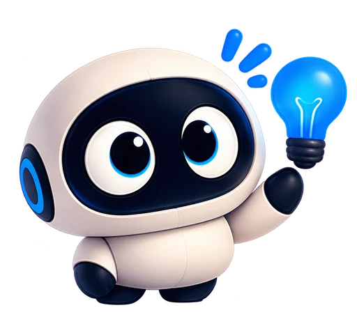
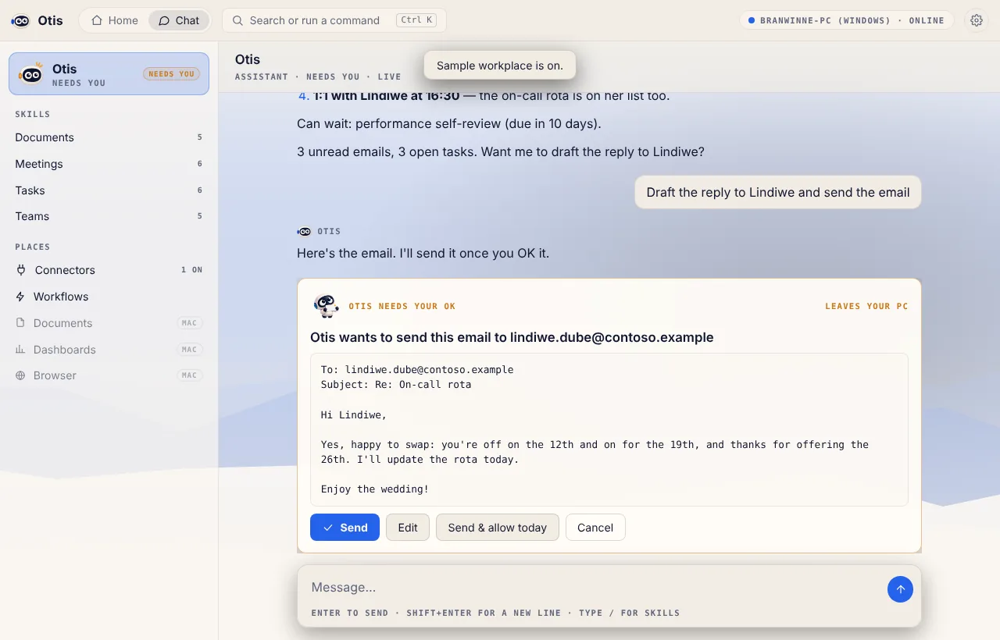
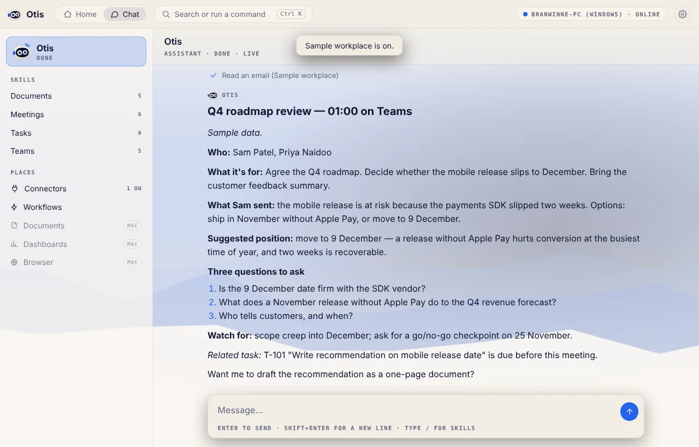

Prepare for my next meeting
Who's coming, what it's for, what they sent you, and the three questions worth asking.
For independent professionals and small teams · Invite-only · Windows and Mac
Otis gathers meeting, email and available task context into a useful brief, then drafts a follow-up and next steps for you to review. Reuse the flow as a workflow across the apps you already use.
Works with Claude Code or Codex. Provider usage is billed separately; business use should use provider API billing or an approved integration.
See it in action
Home, a meeting brief, an email waiting for your OK, and the settings that decide when Otis asks. Shown with the built-in sample workplace.
A day with Otis
Prepare for my next meeting
Who's coming, what it's for, what they sent you, and the three questions worth asking.

10:15What needs my attention?
Your meetings, unread email and open tasks in one ranked list, with what to do about each.
Draft a one-page proposal
A clean first draft, saved straight to your Otis folder, ready for you to edit.
Weekly wrap-up
A workflow that summarises your week and writes your status report, on a schedule.
You're in control
By default, Otis previews actions that send, change or delete connected data. You can edit, approve or cancel, and choose how often Otis asks for each type of action.


Works with your tools
Connect Microsoft 365, Google Workspace, Slack and more, or try the sample workplace first. Otis also supports MCP, an open way to add compatible tools.
Privacy by design
Otis saves documents in its folder on your PC or Mac. Otis has no central server that stores your connected app data.
Otis sends your request and the connected information needed for the task to Claude or Codex under your account. Connector sign-ins are stored on your computer.
Connected actions show a preview by default. You choose per-action permissions; workflows always ask before external actions.
Meet Otis
You'll always know what Otis is up to.
Invite-only early access
Selected early-access testers can try Otis for free. If you're ready to evaluate it for a real business task, you can also ask us about a supported, paid pilot.
Windows 10 and 11, 64-bit. Also available as an MSI for IT teams and Microsoft Intune.
macOS 11 or later, Apple silicon and Intel.
Check on Otis and approve its actions from your phone. Mention it in your request if you'd like to try it.
Otis uses Claude Code or Codex. Provider usage is billed separately; paid business pilots should use API billing or an approved integration. We only use your request to decide on invites and contact you about Otis. See the privacy policy.
If the form doesn't work, email us to request an invite.
Questions
Otis is in an invite-only pilot while we polish it with a small group of testers. Request an invite and, when there’s a spot, we’ll email you the unlisted pilot page for Windows or Mac. Anyone with that link can view and download the installers, so please don’t share it. Public downloads open once the pilot is done.
A Windows 10 or 11 PC, or a Mac with macOS 11 or later, plus Claude Code or Codex. Provider usage is billed separately. Paid business pilots should use provider API billing or an integration explicitly approved for Otis. In Otis, open Settings → AI engine and choose Connect.
Selected early-access testers can use Otis for free. There is also a supported four-week business pilot for one user at R999 once. It includes guided setup and two short reviews, with founder support capped at 90 minutes. It is invoiced before setup and does not renew automatically. The current continuation price hypothesis is R499 per user per month, invoiced manually if you choose to continue. AI-provider usage is separate and is not included; paid business use should use provider API billing or an integration explicitly approved for Otis. Personal subscription sign-in is for evaluation unless the provider approves that use. These prices are being tested and are not validated rates.
Yes. To answer, Otis sends your request and the connected information needed for the task to the AI engine you chose, under your account with that provider. Otis does not run its own central data server. Read the privacy policy for details.
Reading connected information and saving files in the Otis folder do not require approval. Connected actions that send, change or delete data show a card by default. You can set permissions to always ask, ask once a day, or not ask; Otis says in chat when it proceeds under a permission. Scheduled workflows always ask before external actions.
Early access builds aren't code-signed yet, so Windows shows “Windows protected your PC” (choose More info → Run anyway) and macOS says it can't check Otis for malicious software (open System Settings → Privacy & Security and choose Open Anyway). Signed builds are on the way.
Not yet. Phone apps for checking on Otis and approving its actions are next. Mention it in your invite request if you'd like to try them.